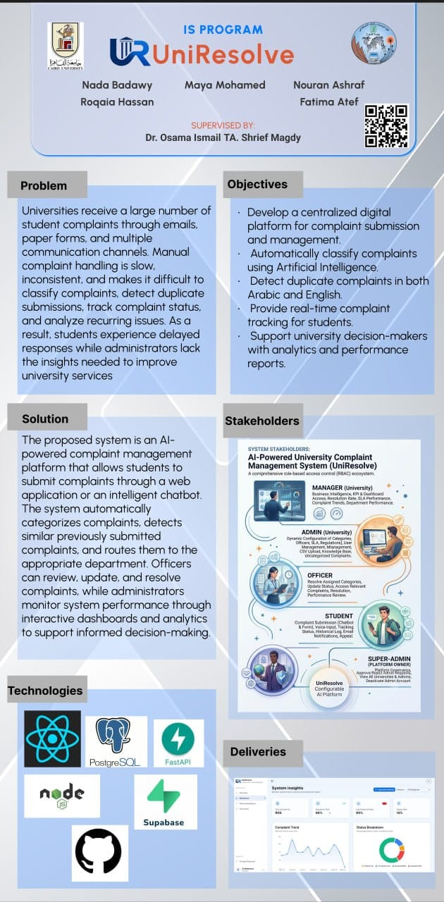

University Complaints Management System
Grade: A+An AI-powered complaint management platform built to help universities centralize and streamline student complaint handling — from submission and automatic classification to resolution tracking and analytics-driven reporting for decision-makers.
My contribution: designed and implemented backend REST APIs, worked on the PostgreSQL/Supabase database layer including data models and data management, and contributed to the analytics and reporting features. Collaborated with a 5-person multidisciplinary team across the full project lifecycle.
Node.js
PostgreSQL
Supabase
REST APIs